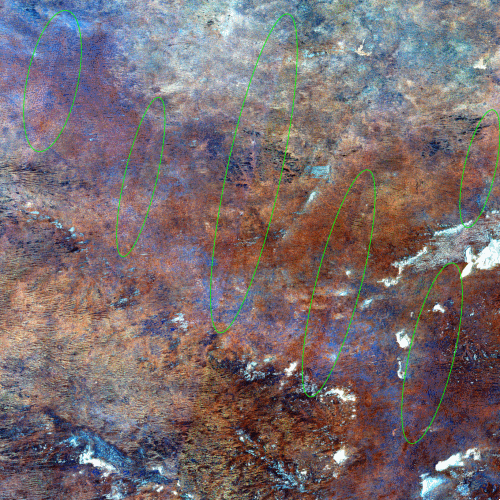
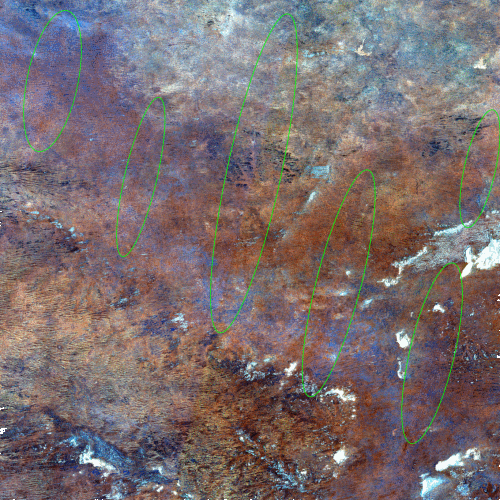

|
|
EOMasters Toolbox | |
Ensuring reliable comparisons of images over time and under different conditions is crucial in remote sensing. To achieve this reliability, it is essential to simulate a nadir viewing perspective. This adjustment addresses the anisotropic properties of surface reflectance and the variations in sun and observation angles. The c-factor method, a straightforward yet effective technique, adjusts the measured surface reflectance using the MODIS BRDF model to produce Nadir BRDF Adjusted Reflectance (NBAR).
This implementation follows the general method developed by D.P. Roy et al. (see references below). It has originally been developed for Landsat data and has been designed to give consistent view angle adjustments throughout the Landsat collection. This same approach is also applicable to Sentinel-2 data.
This c-factor method has already been implemented for Sentinel-2 MSI data in SEN2NBAR as a Python module and in SentinelHub (see references below). But both implementations do not consider the detector footprints to calculate the correct view angles. In case of SentinelHub the sun angles are not correctly interpolate too. This implementation uses the S2 Geometry Up-Scaling to get the correct view angles to normalise the surface reflectances.
This implementation supports the standard Sentinel-2 L2A data provided by Copernicus only. Theoretically it could also support L2A data from Theia in the Muscate format. Unfortunately it does not provide the correct detector footprints for the surface reflectance bands. This issue has already been
The input data must not be cropped or resampled beforehand. This would lead to incorrectly calculated angles. Also, the band names should not be changed. But, it is possible to remove bands from the data product. Before the processing starts a validation is performed and processing is refused if the input does not meet the requirements.
Not all Sentinel-2 bands can be corrected, because not for all MODIS Model Parameters exist. The bands which are corrected are B2, B3, B4, B5, B6, B7, B8, B11 and B12. Those bands which are not corrected are included in the output anyway to keep the full S2 spectrum.
The example below shows surface reflectance RGB images over the Australian desert of the original and the normalised L2A scene. The areas where the visible detector edges are reduced or almost removed at all are highlighted.
|
Original Surface Reflectance RGB
|
Normalised Surface Reflectance RGB
|
 |
 |